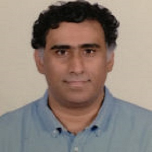

Prakash Easwaran is a semiconductor veteran with more than 28 years of experience in various
semiconductor
and systems companies like Texas Instruments, Cosmic Circuits, and InnoRel Systems. His expertise lies
in
building high-performance teams executing analog mixed projects in automotive, consumer, and networking
domains. Prakash was the CTO of Cosmic Circuits before its successful acquisition by Cadence. Prakash
has 5
papers and 29 patents attributed to his name.